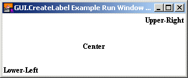

GUI.CreateLabel (x, y : int, text : string) : int GUI.CreateLabelFull (x, y : int, text : string, width, height, alignment, fontID : int) : int
Creates a label and returns the label's widget ID. The label widget is used to display text. It can be used to display text in a variety of fonts and sizes. Label widgets can also be aligned in a variety of ways. Three Labels The x and y parameters specify the lower-left corner of the area in which the text will be drawn. For GUI.CreateLabel, this is the lower-left corner of the text. The text parameter specifies the text of the label. For GUI.CreateLabelFull, the width and height parameters specify the area in which the label is to appear. This is used for alignment purposes. See the program below for an example of aligning the text to different corners of the window. The alignment parameter specifies the alignment of the text in the text area. This value is the sum of horizontal alignment and the vertical alignment. The horizontal alignment is one of 0, GUI.LEFT, GUI.CENTER, or GUI.RIGHT. A horizontal alignment of 0 is the default and is the same as the alignment of GUI.LEFT. The vertical alignment is one of 0, GUI.TOP, GUI.MIDDLE, or GUI.BOTTOM. A horizontal alignment of 0 is the default and is the same as the alignment of GUI.BOTTOM. These alignments align the text in various ways in the text area. The fontID parameter specifies the font ID of the font to be used in the text field. The font ID is received from a Font.New call. Do not call Font.Free for this font ID until the label has been disposed of by calling GUI.Dispose. By using the fondID parameter, labels can be have any size or typeface. Labels are passive widgets, meaning that they do not respond to button clicks or keystrokes.

The following program creates three labels, one with the default alignment, the other two aligned to appear in the center and upper-right corner of the window.
import GUI
View.Set ("graphics:300;100,nobuttonbar ")
var lowerLeft : int := GUI.CreateLabel (0, 0, "Lower-Left")
var center : int := GUI.CreateLabelFull (0, 0, "Center", maxx, maxy,
GUI.MIDDLE + GUI.CENTER, 0)
var upperRight : int := GUI.CreateLabelFull (0, 0, "Upper-Right",
maxx, maxy, GUI.RIGHT + GUI.TOP, 0)
When GUI.CreateLabel or GUI.CreateLabelFull is called, the newly created label will be displayed immediately unless GUI.DisplayWhenCreated has been called with the display parameter set to false. A frame widget is a passive widget and cannot be enabled or disabled.
The following GUI subprograms can be called with a label as the widgetID parameter: GUI.Show, GUI.Hide, GUI.Dispose,GUI.GetX, GUI.GetY, GUI.GetWidth,GUI.GetHeight, GUI.SetPosition,GUI.SetSize, GUI.SetPositionAndSize,GUI.GetSliderValue, GUI.SetSliderValue,GUI.SetSliderMinMax, GUI.SetLabel
Exported qualified. This means that you can only call the function by calling GUI.CreateLabel, not by calling CreateLabel.
gui_setlabel.html for changing the label's text.